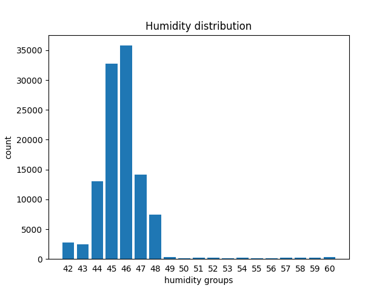
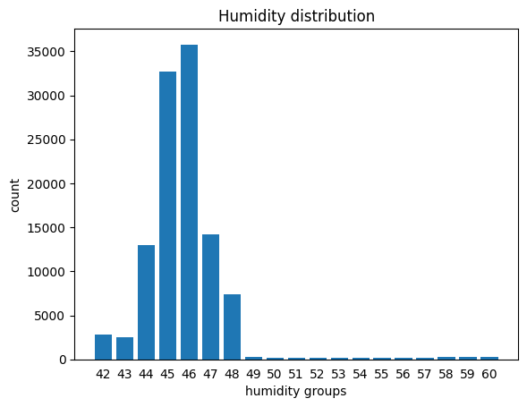
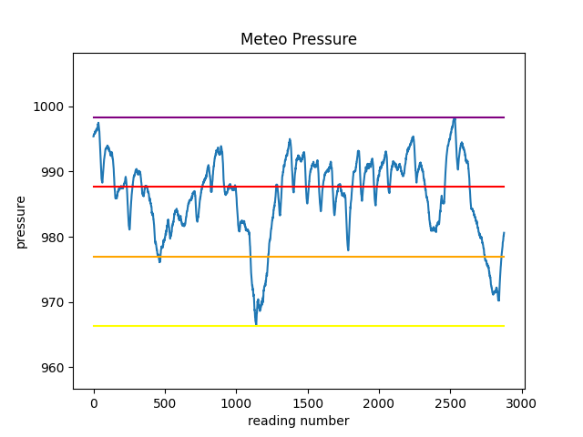
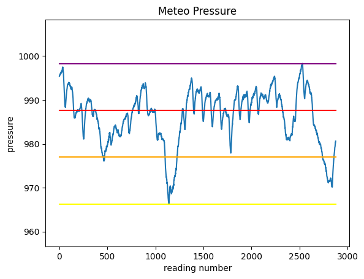
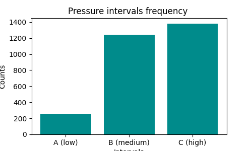
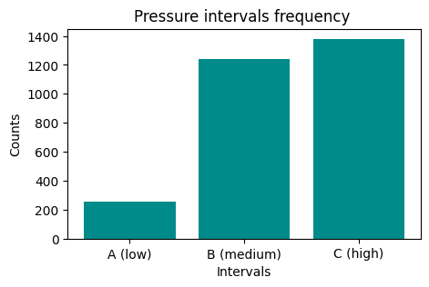
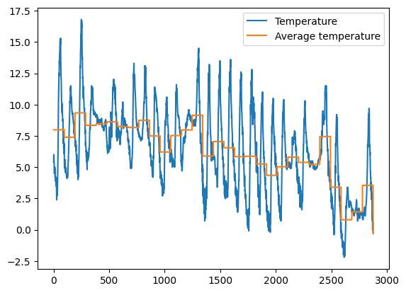

Pandas 2 - Advanced Operations#
Download exercises zip#
Let’s see how to do more advanced operations with pandas, like grouping with groupby, joining tables with merge, and perform geospatial analysis with GeoPandas (only mentioned).
We chose to collect such topics in this notebook as tipically while executing these operations problems are more likely to arise and thus some further internet search is required.
1. Grouping#
Reference:
To group items and perform statistics on each group, you can use the groupby method.
Let’s see an example of a possible grouping. First we reload again the astropi.csv described in the previous tutorial
[ ]:
import pandas as pd
import numpy as np
df = pd.read_csv('data/astropi.csv', encoding='UTF-8')
Suppose we want to calculate how many readings of humidity fall into the interval defined by each integer value of humidity humidity_int, so to be able to plot a bar chart like this (actually there are faster methods with numpy for making histograms but here we follow the step by step approach)

1.1 Let’s see a group#
To get an initial idea, we could start checking only the rows that belong to the group 42, that is have a humidity value lying between 42.0 included until 43.0 excluded. We can use the transform method as previously seen, noting that group 42 holds 2776 rows:
[2]:
df[ df['humidity'].transform(int) == 42]
[2]:
| time_stamp | temp_cpu | temp_h | temp_p | humidity | pressure | pitch | roll | yaw | mag_x | mag_y | mag_z | accel_x | accel_y | accel_z | gyro_x | gyro_y | gyro_z | reset | |
|---|---|---|---|---|---|---|---|---|---|---|---|---|---|---|---|---|---|---|---|
| 19222 | 2016-02-18 16:37:00 | 33.18 | 28.96 | 26.51 | 42.99 | 1006.10 | 1.19 | 53.23 | 313.69 | 9.081925 | -32.244905 | -35.135448 | -0.000581 | 0.018936 | 0.014607 | 0.000563 | 0.000346 | -0.000113 | 0 |
| 19619 | 2016-02-18 17:43:50 | 33.34 | 29.06 | 26.62 | 42.91 | 1006.30 | 1.50 | 52.54 | 194.49 | -53.197113 | -4.014863 | -20.257249 | -0.000439 | 0.018838 | 0.014526 | -0.000259 | 0.000323 | -0.000181 | 0 |
| 19621 | 2016-02-18 17:44:10 | 33.38 | 29.06 | 26.62 | 42.98 | 1006.28 | 1.01 | 52.89 | 195.39 | -52.911983 | -4.207085 | -20.754475 | -0.000579 | 0.018903 | 0.014580 | 0.000415 | -0.000232 | 0.000400 | 0 |
| 19655 | 2016-02-18 17:49:51 | 33.37 | 29.07 | 26.62 | 42.94 | 1006.28 | 0.93 | 53.21 | 203.76 | -43.124080 | -8.181511 | -29.151436 | -0.000432 | 0.018919 | 0.014608 | 0.000182 | 0.000341 | 0.000015 | 0 |
| 19672 | 2016-02-18 17:52:40 | 33.33 | 29.06 | 26.62 | 42.93 | 1006.24 | 1.34 | 52.71 | 206.97 | -36.893841 | -10.130503 | -31.484077 | -0.000551 | 0.018945 | 0.014794 | -0.000378 | -0.000013 | -0.000101 | 0 |
| ... | ... | ... | ... | ... | ... | ... | ... | ... | ... | ... | ... | ... | ... | ... | ... | ... | ... | ... | ... |
| 110864 | 2016-02-29 09:24:21 | 31.56 | 27.52 | 24.83 | 42.94 | 1005.83 | 1.58 | 49.93 | 129.60 | -15.169673 | -27.642610 | 1.563183 | -0.000682 | 0.017743 | 0.014646 | -0.000264 | 0.000206 | 0.000196 | 0 |
| 110865 | 2016-02-29 09:24:30 | 31.55 | 27.50 | 24.83 | 42.72 | 1005.85 | 1.89 | 49.92 | 130.51 | -15.832622 | -27.729389 | 1.785682 | -0.000736 | 0.017570 | 0.014855 | 0.000143 | 0.000199 | -0.000024 | 0 |
| 110866 | 2016-02-29 09:24:41 | 31.58 | 27.50 | 24.83 | 42.83 | 1005.85 | 2.09 | 50.00 | 132.04 | -16.646212 | -27.719479 | 1.629533 | -0.000647 | 0.017657 | 0.014799 | 0.000537 | 0.000257 | 0.000057 | 0 |
| 110867 | 2016-02-29 09:24:50 | 31.62 | 27.50 | 24.83 | 42.81 | 1005.88 | 2.88 | 49.69 | 133.00 | -17.270447 | -27.793136 | 1.703806 | -0.000835 | 0.017635 | 0.014877 | 0.000534 | 0.000456 | 0.000195 | 0 |
| 110868 | 2016-02-29 09:25:00 | 31.57 | 27.51 | 24.83 | 42.94 | 1005.86 | 2.17 | 49.77 | 134.18 | -17.885872 | -27.824149 | 1.293345 | -0.000787 | 0.017261 | 0.014380 | 0.000459 | 0.000076 | 0.000030 | 0 |
2776 rows × 19 columns
1.2 groupby#
We can generlize and associate to each integer group the amount of rows belonging to that group with the groupby method. First let’s make a column holding the integer humidity value for each group:
[3]:
df['humidity_int'] = df['humidity'].transform( lambda x: int(x) )
[4]:
df[ ['time_stamp', 'humidity_int', 'humidity'] ].head()
[4]:
| time_stamp | humidity_int | humidity | |
|---|---|---|---|
| 0 | 2016-02-16 10:44:40 | 44 | 44.94 |
| 1 | 2016-02-16 10:44:50 | 45 | 45.12 |
| 2 | 2016-02-16 10:45:00 | 45 | 45.12 |
| 3 | 2016-02-16 10:45:10 | 45 | 45.32 |
| 4 | 2016-02-16 10:45:20 | 45 | 45.18 |
Then we can call groupby by writing down:
first the column where to group (
humidity_int)second the column where to calculate the statistics
finally the statistics to be performed, in this case
.count()(other common ones aresum(),min(),max(),mean()…)
[5]:
df.groupby(['humidity_int'])['humidity'].count()
[5]:
humidity_int
42 2776
43 2479
44 13029
45 32730
46 35775
47 14176
48 7392
49 297
50 155
51 205
52 209
53 128
54 224
55 164
56 139
57 183
58 237
59 271
60 300
Name: humidity, dtype: int64
Note the result is a Series:
[6]:
result = df.groupby(['humidity_int'])['humidity'].count()
[7]:
type(result)
[7]:
pandas.core.series.Series
Since we would like a customized bar chart, for the sake of simplicity we could use the native plt.plot function of matplotlib, for which we will need one sequence for \(xs\) coordinates and another one for the \(ys\).
The sequence for \(xs\) can be extracted from the index of the Series:
[8]:
result.index
[8]:
Int64Index([42, 43, 44, 45, 46, 47, 48, 49, 50, 51, 52, 53, 54, 55, 56, 57, 58,
59, 60],
dtype='int64', name='humidity_int')
For the \(ys\) sequence we can directly use the Series like this:
[ ]:
%matplotlib inline
import matplotlib as mpl
import matplotlib.pyplot as plt
plt.bar(result.index, result)
plt.xlabel('humidity groups')
plt.ylabel('count')
plt.title('Humidity distribution')
plt.xticks(result.index, result.index) # shows labels as integers
plt.tick_params(bottom=False) # removes the little bottom lines
plt.savefig('img/astropi-humidity-histogram.png')
plt.show()

1.3 Modifying a dataframe by plugging in the result of a grouping#
Notice we’ve got only 19 rows in the grouped series:
[10]:
df.groupby(['humidity_int'])['humidity'].count()
[10]:
humidity_int
42 2776
43 2479
44 13029
45 32730
46 35775
47 14176
48 7392
49 297
50 155
51 205
52 209
53 128
54 224
55 164
56 139
57 183
58 237
59 271
60 300
Name: humidity, dtype: int64
How could we fill the whole original table, assigning to each row the count of its own group?
We can use transform like this:
[11]:
df.groupby(['humidity_int'])['humidity'].transform('count')
[11]:
0 13029
1 32730
2 32730
3 32730
4 32730
...
110864 2776
110865 2776
110866 2776
110867 2776
110868 2776
Name: humidity, Length: 110869, dtype: int64
As usual, group_by does not modify the dataframe, if we want the result stored in the dataframe we need to assign the result to a new column:
[12]:
df['humidity_counts'] = df.groupby(['humidity_int'])['humidity'].transform('count')
[13]:
df
[13]:
| time_stamp | temp_cpu | temp_h | temp_p | humidity | pressure | pitch | roll | yaw | mag_x | ... | mag_z | accel_x | accel_y | accel_z | gyro_x | gyro_y | gyro_z | reset | humidity_int | humidity_counts | |
|---|---|---|---|---|---|---|---|---|---|---|---|---|---|---|---|---|---|---|---|---|---|
| 0 | 2016-02-16 10:44:40 | 31.88 | 27.57 | 25.01 | 44.94 | 1001.68 | 1.49 | 52.25 | 185.21 | -46.422753 | ... | -12.129346 | -0.000468 | 0.019439 | 0.014569 | 0.000942 | 0.000492 | -0.000750 | 20 | 44 | 13029 |
| 1 | 2016-02-16 10:44:50 | 31.79 | 27.53 | 25.01 | 45.12 | 1001.72 | 1.03 | 53.73 | 186.72 | -48.778951 | ... | -12.943096 | -0.000614 | 0.019436 | 0.014577 | 0.000218 | -0.000005 | -0.000235 | 0 | 45 | 32730 |
| 2 | 2016-02-16 10:45:00 | 31.66 | 27.53 | 25.01 | 45.12 | 1001.72 | 1.24 | 53.57 | 186.21 | -49.161878 | ... | -12.642772 | -0.000569 | 0.019359 | 0.014357 | 0.000395 | 0.000600 | -0.000003 | 0 | 45 | 32730 |
| 3 | 2016-02-16 10:45:10 | 31.69 | 27.52 | 25.01 | 45.32 | 1001.69 | 1.57 | 53.63 | 186.03 | -49.341941 | ... | -12.615509 | -0.000575 | 0.019383 | 0.014409 | 0.000308 | 0.000577 | -0.000102 | 0 | 45 | 32730 |
| 4 | 2016-02-16 10:45:20 | 31.66 | 27.54 | 25.01 | 45.18 | 1001.71 | 0.85 | 53.66 | 186.46 | -50.056683 | ... | -12.678341 | -0.000548 | 0.019378 | 0.014380 | 0.000321 | 0.000691 | 0.000272 | 0 | 45 | 32730 |
| ... | ... | ... | ... | ... | ... | ... | ... | ... | ... | ... | ... | ... | ... | ... | ... | ... | ... | ... | ... | ... | ... |
| 110864 | 2016-02-29 09:24:21 | 31.56 | 27.52 | 24.83 | 42.94 | 1005.83 | 1.58 | 49.93 | 129.60 | -15.169673 | ... | 1.563183 | -0.000682 | 0.017743 | 0.014646 | -0.000264 | 0.000206 | 0.000196 | 0 | 42 | 2776 |
| 110865 | 2016-02-29 09:24:30 | 31.55 | 27.50 | 24.83 | 42.72 | 1005.85 | 1.89 | 49.92 | 130.51 | -15.832622 | ... | 1.785682 | -0.000736 | 0.017570 | 0.014855 | 0.000143 | 0.000199 | -0.000024 | 0 | 42 | 2776 |
| 110866 | 2016-02-29 09:24:41 | 31.58 | 27.50 | 24.83 | 42.83 | 1005.85 | 2.09 | 50.00 | 132.04 | -16.646212 | ... | 1.629533 | -0.000647 | 0.017657 | 0.014799 | 0.000537 | 0.000257 | 0.000057 | 0 | 42 | 2776 |
| 110867 | 2016-02-29 09:24:50 | 31.62 | 27.50 | 24.83 | 42.81 | 1005.88 | 2.88 | 49.69 | 133.00 | -17.270447 | ... | 1.703806 | -0.000835 | 0.017635 | 0.014877 | 0.000534 | 0.000456 | 0.000195 | 0 | 42 | 2776 |
| 110868 | 2016-02-29 09:25:00 | 31.57 | 27.51 | 24.83 | 42.94 | 1005.86 | 2.17 | 49.77 | 134.18 | -17.885872 | ... | 1.293345 | -0.000787 | 0.017261 | 0.014380 | 0.000459 | 0.000076 | 0.000030 | 0 | 42 | 2776 |
110869 rows × 21 columns
1.4 Exercise - meteo pressure intervals#
✪✪✪ The dataset meteo.csv contains the weather data of Trento, November 2017 (source: www.meteotrentino.it). We would like to subdivide the pressure readings into three intervals A (low), B (medium), C (high), and count how many readings have been made for each interval.
IMPORTANT: assign the dataframe to a variable called meteo so to avoid confusion with other dataframes
1.4.1 Where are the intervals?#
First, let’s find the pressure values for these 3 intervals and plot them as segments, so to end up with a chart like this:

Before doing the plot, we will need to know at which height we should plot the segments.
Load the dataset with pandas, calculate the following variables and PRINT them
use
UTF-8as encodinground values with
roundfunctionthe excursion is the difference between minimum and maximum
note
intervalCcoincides with the maximum
DO NOT use min and max as variable names (they are reserved functions!!)
[ ]:
import pandas as pd
# write here
Show solution
[ ]:
import pandas as pd
meteo = pd.read_csv('meteo.csv', encoding='UTF-8')
minimum = meteo['Pressure'].min()
maximum = meteo['Pressure'].max()
excursion = maximum - minimum
intervalA,intervalB,intervalC = minimum + excursion/3.0, minimum + excursion*2.0/3.0, minimum + excursion
intervalA,intervalB,intervalC = round(intervalA,2), round(intervalB,2),round(intervalC,2)
print('minimum:',minimum)
print('maximum:', maximum)
print('excursion:', excursion)
print('intervalA:', intervalA)
print('intervalB:', intervalB)
print('intervalC:', intervalC)
1.4.2 Segments plot#
Try now to plot the chart of pressure and the 4 horizontal segments.
to overlay the segments with different colors, just make repeated calls to
plt.plota segment is defined by two points: so just find the coordinates of those two points..
try leaving some space above and below the chart
REMEMBER title and labels
[ ]:
# write here

Show solution
[ ]:
%matplotlib inline
import matplotlib as mpl
import matplotlib.pyplot as plt
plt.ylim(minimum*0.99,maximum*1.01) # sspace below and above
meteo['Pressure'].plot()
plt.plot([0,meteo.shape[0]], [minimum, minimum], color="yellow")
plt.plot([0,meteo.shape[0]], [intervalA,intervalA], color="orange")
plt.plot([0,meteo.shape[0]], [intervalB,intervalB], color="red")
plt.plot([0,meteo.shape[0]], [intervalC,intervalC], color="purple")
plt.title('Meteo Pressure')
plt.xlabel('reading number')
plt.ylabel('pressure')
plt.savefig('img/expected-pressure-intervals.png')
plt.plot()
plt.show()
1.4.3 Assigning the intervals#
We literally made a picture of where the intervals are located - let’s now ask ourselves how many readings have been done for each interval.
First, try creating a column which assigns to each reading the interval where it belongs to.
HINT 1: use
transformHINT 2: in the function you are going to define, do not recalculate inside values such as minimum, maximum, intervals etc because it would slow down Pandas. Instead, use the variables we’ve already defined - remember that
transformriexecutes the argument function for each row!
[ ]:
# write here
Show solution
[ ]:
def fintervals(pressure):
if pressure < intervalA:
return "A (low)"
elif pressure < intervalB :
return "B (medium)"
else:
return "C (high)"
meteo['PressureInterval'] = meteo['Pressure'].transform(fintervals)
meteo
1.4.4 Grouping by intervals#
We would like to have an histogram like this one:

First, create a grouping to count occurrences:
[ ]:
# write here
Show solution
[ ]:
meteo.groupby(['PressureInterval'])['Pressure'].count()
Now plot it
NOTE: the result of
groupbyis also aSeries, so it’s plottable as we’ve already seen…REMEMBER title and axis labels
[ ]:
%matplotlib inline
import matplotlib as mpl
import matplotlib.pyplot as plt
# write here

Show solution
[ ]:
%matplotlib inline
import matplotlib as mpl
import matplotlib.pyplot as plt
g = meteo.groupby(['PressureInterval'])['Pressure'].count()
plt.figure(figsize=(5,3))
plt.title('Pressure intervals frequency ')
plt.xlabel('Intervals')
plt.ylabel('Counts')
plt.bar(g.index, g, color='darkcyan')
plt.savefig('img/pressure-distribution.png')
plt.show()
1.5 Exercise - meteo average temperature#
✪✪✪ Calculate the average temperature for each day, and show it in the plot, so to have a couple new columns like these:
Day Avg_day_temp
01/11/2017 7.983333
01/11/2017 7.983333
01/11/2017 7.983333
. .
. .
02/11/2017 7.384375
02/11/2017 7.384375
02/11/2017 7.384375
. .
. .
HINT 1: add 'Day' column by extracting only the day from the date. To do it, use the function .strapplied to all the column.
HINT 2: There are various ways to solve the exercise:
Most perfomant and elegant is with
groupbyoperator, see Pandas trasform - more than meets the eyeAs alternative, you may use a
forto cycle through days. Typically, using aforis not a good idea with Pandas, as on large datasets it can take a lot to perform the updates. Still, since this dataset is small enough, you should get results in a decent amount of time.
[ ]:
# write here

Show solution
[ ]:
print()
print('****SOLUTION 1 (EFFICIENT) - best solution with groupby and transform ')
meteo = pd.read_csv('meteo.csv', encoding='UTF-8')
meteo['Day'] = meteo['Date'].str[0:10]
# .transform is needed to avoid getting a table with only 30 lines
meteo['Avg_day_temp'] = meteo.groupby('Day')['Temp'].transform('mean')
print(meteo.head())
meteo.Temp.plot(label="Temperature", legend=True)
meteo.Avg_day_temp.plot(label="Average temperature", legend=True)
plt.show()
2. Merging tables#
Suppose we want to add a column with geographical position of the ISS. To do so, we would need to join our dataset with another one containing such information. Let’s take for example the dataset iss-coords.csv
[ ]:
iss_coords = pd.read_csv('data/iss-coords.csv', encoding='UTF-8')
[24]:
iss_coords
[24]:
| timestamp | lat | lon | |
|---|---|---|---|
| 0 | 2016-01-01 05:11:30 | -45.103458 | 14.083858 |
| 1 | 2016-01-01 06:49:59 | -37.597242 | 28.931170 |
| 2 | 2016-01-01 11:52:30 | 17.126141 | 77.535602 |
| 3 | 2016-01-01 11:52:30 | 17.126464 | 77.535861 |
| 4 | 2016-01-01 14:54:08 | 7.259561 | 70.001561 |
| ... | ... | ... | ... |
| 333 | 2016-02-29 13:23:17 | -51.077590 | -31.093987 |
| 334 | 2016-02-29 13:44:13 | 30.688553 | -135.403820 |
| 335 | 2016-02-29 13:44:13 | 30.688295 | -135.403533 |
| 336 | 2016-02-29 18:44:57 | 27.608774 | -130.198781 |
| 337 | 2016-02-29 21:36:47 | 27.325186 | -129.893278 |
338 rows × 3 columns
We notice there is a timestamp column, which unfortunately has a slightly different name that time_stamp column (notice the underscore _) in original astropi dataset:
[25]:
df.info()
<class 'pandas.core.frame.DataFrame'>
RangeIndex: 110869 entries, 0 to 110868
Data columns (total 21 columns):
# Column Non-Null Count Dtype
--- ------ -------------- -----
0 time_stamp 110869 non-null object
1 temp_cpu 110869 non-null float64
2 temp_h 110869 non-null float64
3 temp_p 110869 non-null float64
4 humidity 110869 non-null float64
5 pressure 110869 non-null float64
6 pitch 110869 non-null float64
7 roll 110869 non-null float64
8 yaw 110869 non-null float64
9 mag_x 110869 non-null float64
10 mag_y 110869 non-null float64
11 mag_z 110869 non-null float64
12 accel_x 110869 non-null float64
13 accel_y 110869 non-null float64
14 accel_z 110869 non-null float64
15 gyro_x 110869 non-null float64
16 gyro_y 110869 non-null float64
17 gyro_z 110869 non-null float64
18 reset 110869 non-null int64
19 humidity_int 110869 non-null int64
20 humidity_counts 110869 non-null int64
dtypes: float64(17), int64(3), object(1)
memory usage: 17.8+ MB
To merge datasets according to the columns, we can use the command merge like this:
[26]:
# remember merge produces a NEW dataframe
geo_astropi = df.merge(iss_coords, left_on='time_stamp', right_on='timestamp')
# merge will add both time_stamp and timestamp columns,
# so we remove the duplicate column `timestamp`
geo_astropi = geo_astropi.drop('timestamp', axis=1)
[27]:
geo_astropi
[27]:
| time_stamp | temp_cpu | temp_h | temp_p | humidity | pressure | pitch | roll | yaw | mag_x | ... | accel_y | accel_z | gyro_x | gyro_y | gyro_z | reset | humidity_int | humidity_counts | lat | lon | |
|---|---|---|---|---|---|---|---|---|---|---|---|---|---|---|---|---|---|---|---|---|---|
| 0 | 2016-02-19 03:49:00 | 32.53 | 28.37 | 25.89 | 45.31 | 1006.04 | 1.31 | 51.63 | 34.91 | 21.125001 | ... | 0.018851 | 0.014607 | 0.000060 | -0.000304 | 0.000046 | 0 | 45 | 32730 | 31.434741 | 52.917464 |
| 1 | 2016-02-19 14:30:40 | 32.30 | 28.12 | 25.62 | 45.57 | 1007.42 | 1.49 | 52.29 | 333.49 | 16.083471 | ... | 0.018687 | 0.014502 | 0.000208 | -0.000499 | 0.000034 | 0 | 45 | 32730 | -46.620658 | -57.311657 |
| 2 | 2016-02-19 14:30:40 | 32.30 | 28.12 | 25.62 | 45.57 | 1007.42 | 1.49 | 52.29 | 333.49 | 16.083471 | ... | 0.018687 | 0.014502 | 0.000208 | -0.000499 | 0.000034 | 0 | 45 | 32730 | -46.620477 | -57.311138 |
| 3 | 2016-02-21 22:14:11 | 32.21 | 28.05 | 25.50 | 47.36 | 1012.41 | 0.67 | 52.40 | 27.57 | 15.441683 | ... | 0.018800 | 0.014136 | -0.000015 | -0.000159 | 0.000221 | 0 | 47 | 14176 | 19.138359 | -140.211489 |
| 4 | 2016-02-23 23:40:50 | 32.32 | 28.18 | 25.61 | 47.45 | 1010.62 | 1.14 | 51.41 | 33.68 | 11.994554 | ... | 0.018276 | 0.014124 | 0.000368 | 0.000368 | 0.000030 | 0 | 47 | 14176 | 4.713819 | 80.261665 |
| 5 | 2016-02-24 10:05:51 | 32.39 | 28.26 | 25.70 | 46.83 | 1010.51 | 0.61 | 51.91 | 287.86 | 6.554283 | ... | 0.018352 | 0.014344 | -0.000664 | -0.000518 | 0.000171 | 0 | 46 | 35775 | -46.061583 | 22.246025 |
| 6 | 2016-02-25 00:23:01 | 32.38 | 28.18 | 25.62 | 46.52 | 1008.28 | 0.90 | 51.77 | 30.80 | 9.947132 | ... | 0.018502 | 0.014366 | 0.000290 | 0.000314 | -0.000375 | 0 | 46 | 35775 | 47.047346 | 137.958918 |
| 7 | 2016-02-27 01:43:10 | 32.42 | 28.34 | 25.76 | 45.72 | 1006.79 | 0.57 | 49.85 | 10.57 | 7.805606 | ... | 0.017930 | 0.014378 | -0.000026 | -0.000013 | -0.000047 | 0 | 45 | 32730 | -41.049112 | 30.193004 |
| 8 | 2016-02-27 01:43:10 | 32.42 | 28.34 | 25.76 | 45.72 | 1006.79 | 0.57 | 49.85 | 10.57 | 7.805606 | ... | 0.017930 | 0.014378 | -0.000026 | -0.000013 | -0.000047 | 0 | 45 | 32730 | -8.402991 | -100.981726 |
| 9 | 2016-02-28 09:48:40 | 32.62 | 28.62 | 26.02 | 45.15 | 1006.06 | 1.12 | 50.44 | 301.74 | 10.348327 | ... | 0.017620 | 0.014725 | -0.000358 | -0.000301 | -0.000061 | 0 | 45 | 32730 | 50.047523 | 175.566751 |
10 rows × 23 columns
Exercise 2.1 - better merge#
If you notice, above table does have lat and lon columns, but has very few rows. Why ? Try to merge the tables in some meaningful way so to have all the original rows and all cells of lat and lon filled.
For other merging stategies, read about attribute
howin Why And How To Use Merge With Pandas in PythonTo fill missing values don’t use fancy interpolation techniques, just put the station position in that given day or hour
[ ]:
# write here
Show solution
[ ]:
geo_astropi = df.merge(iss_coords, left_on='time_stamp', right_on='timestamp', how='left')
pd.merge_ordered(df, iss_coords, fill_method='ffill', how='left', left_on='time_stamp', right_on='timestamp')
geo_astropi
Continue#
Go on with Pandas Challenges